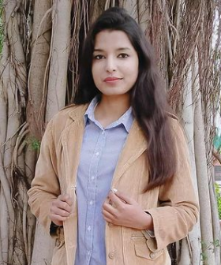

|  |
SWATI BASUCONTACT ME ATPhone: 9643986072Email: swati058mca20@igdtuw.ac.inLinked-In: Swati Basu |
|---|---|
SKILLS SUMMARY
Operating Systems : Linux(ubuntu), Windows(XP,7,10) Web Programming : HTML, CSS, BOOTSTRAP, PHP Programming Languages: JAVA, PYTHON Database : MYSQL, MongoDB Design & Documentation : LaTeX, MS-Office, Star UML, Canva Event Management, Teamwork,Leadership, Interpersonal Skills Craft & Painting, Travelling |
CAREER OBJECTIVEHighly motivated, hard-working individual and have capability to work fit with people. Looking for a challenging role in a reputable organization to utilize my skills for the growth of the organization as well as to enhance my knowledge about new and emerging trends in the IT INTERNSHIPSSummer-Project-cum-InternshipUnder Faculty of USICT, New Delhi | June-July 2021
Web Development and Designing InternThe Sparks Foundation | Nov 2020
|
WORK EXPERIENCE
CERTIFICATIONSONLINE COURSES
|
PROJECTSCustomer Segmentation(ML Based) With LaTeX Report(Journal Format)IGDTUW | Feb.-May. 2021 Air-Quality-Index-Prediction(ML Based) with LaTeX Report(Journal format)IGDTUW | Feb.-May. 2021 Digital Forensics Report on M57.biz Jean's Case(Autopsy Tool)IGDTUW | Network Security and Digital Forensics Workshop | March 2021 Let's Get Hired - Placement Preparation Website ( with Timer Based Mock Test)IGDTUW | Nov.-Dec. 2020 Mini Project : Personal Portfolio WebsiteIGDTUW | Sept. 2020 Research Project: Significance of social media in learning and growth of youthKalindi College | Oct 2017- May 2018 |
ACHIEVEMENTS
|
EDUCATIONAL HISTORYIndira Gandhi Delhi Technical University for WomenMaster of Computer Applications (pursuing) | 2020-22 SGPA: 9.24 Kalindi College, University of DelhiBSc (hons.) Computer Science | 2017-20 CGPA: 8.919 The Srijan School, Model Town, New Delhi-110009Class - 12th | Board - CBSE | 2017 | Percentage : 83.4% Dayanand Public School, Model Town, New Delhi - 110009Class - 10th | Board - CBSE | 2015 | CGPA: 9.2 |